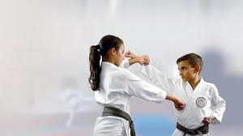

Physical Self-Defense Techniques
Learning physical self-defense techniques is crucial for protecting yourself in dangerous situations. These techniques focus on how to effectively respond to physical threats using strikes, blocks, and escapes.
Essential Techniques
Here are some fundamental self-defense techniques:
- Punches: Target vulnerable areas such as the nose, jaw, or solar plexus. Practice various punches, including straight punches, hooks, and uppercuts.
- Kicks: Use kicks to create distance or incapacitate an attacker. Focus on kicks like front kicks, side kicks, and roundhouse kicks. Aim for sensitive areas such as the groin or knees.
- Blocks: Learn how to block incoming attacks effectively. Practice high blocks, low blocks, and inside blocks to protect yourself from strikes.
- Escapes: Techniques for freeing yourself from holds or grabs. Practice escapes from wrist grabs, bear hugs, and chokes. Learn to use leverage and body movement to break free.
Defensive Stances and Movements
Maintaining a good stance and using proper movements can enhance your ability to defend yourself:
- Basic Stance: Stand with feet shoulder-width apart, knees slightly bent, and hands up to protect your head and torso.
- Side Stance: Shift your weight to one foot and angle your body sideways to minimize exposure and improve mobility.
- Footwork: Practice moving quickly and efficiently. Use techniques like stepping off-line, pivoting, and maintaining balance.
Advice for Practice
Consistent practice is key to mastering self-defense techniques. Here are some tips:
- Practice regularly to build muscle memory and confidence. Include both solo drills and partner exercises.
- Seek instruction from a qualified self-defense or martial arts instructor to ensure proper technique and safety.
- Use training equipment like punching bags or focus mitts to simulate real-life scenarios and improve accuracy.
- Understand the legal implications of self-defense in your area to ensure that you use techniques responsibly and within the law.